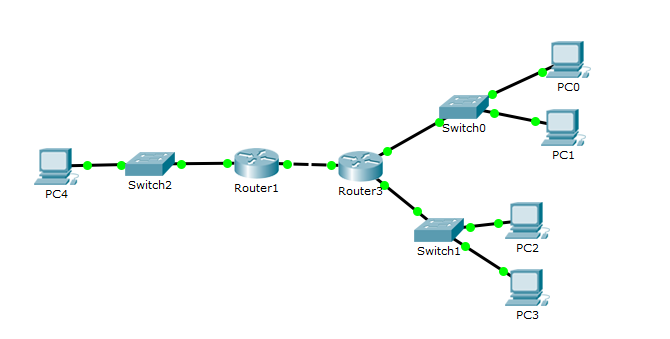
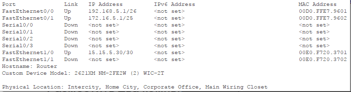
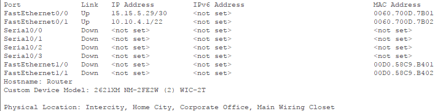
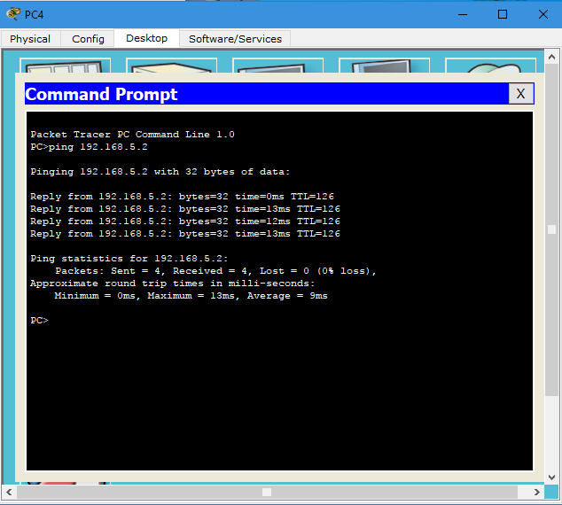

Личная страница

Цель проекта - реализация лабораторных работ курса ИТ
В проекте предусматривается выполнение следующих задач:
Лабораторная работа №1 "Экосистема разработки программ с открытым кодом".
Лабораторная работа №2 "Разработка простого веб-приложения".
Лабораторная работа №3 "Настройка локальной сети передачи данных".
Подготовка к экзамену.
Список лабораторных работ
Задача1
Лабораторная работа №1 "Экосистема разработки программ с открытым кодом"
Создание персональной страницы-отчета на github и работа с git.
1) Пройти регистрацию на сайте GitHub.
2) Получить доступ к репозиторию.
3) Создать личную страницу.
4) Создать персональную веб страницу-отчет с использованием html, css, js. Персональная страница-отчет. Исходный код на index.html и css.
5) Загрузить персональную веб страницу-отчет в репозиторий ИДМ-17 по курсу "Интернет-технологии" на GitHub.
Задача2
Лабораторная работа №2 "Разработка простого веб-приложения"
Проектирование и разработка индивидуального или коллективного веб-приложения с использованием html,css,js + json,xml.
1)Собрать команду для разработки веб-приложения (SPA) и распределить роли.
2)Сделать разметку страницы по макету. Макет страницы. Исходный код на index.html.
3)Прописать стили страницы. Исходный код на css.
4)Прописать js функционал и реализовать возможность чтения json.Исходный код на js и json.
Результат:Готовый проект
Задача3
Лабораторная работа №3 "Настройка локальной сети передачи данных".
Настройка коммутаторов и маршрутизаторов.
Цель данной работы:
Ознакомиться с принципами работы компьютерных сетей, базовой настройкой сетевого оборудования и статической маршрутизацией.
Отчет
Расчет диапазонов подсетей
| 5 вариант |
Lan A |
Lan B |
Lan C |
Между маршрутизаторами |
| Количество узлов в сети |
35 |
120 |
512 |
2 |
| Префиксная маска |
/26 |
/25 |
/22 |
/30 |
| Subnet |
192.168.5.0 |
172.16.5.0 |
10.10.4.0 |
15.15.5.28 |
| Hostmin |
192.168.5.1 |
172.16.5.1 |
10.10.4.1 |
15.15.5.29 |
| Hostmax |
192.168.5.62 |
172.16.5.126 |
10.10.7.254 |
15.15.5.30 |
| Broadcast |
192.168.5.63 |
172.16.5.127 |
10.10.7.255 |
15.15.5.31 |

Задание адресов на компьютерах
| Устройство |
IP адрес |
Маска |
Шлюз по умолчанию |
| PC0 |
192.168.5.2 |
255.255.255.192 |
192.168.5.1 |
| PC1 |
192.168.5.62 |
255.255.255.192 |
192.168.5.1 |
| PC2 |
172.16.5.126 |
255.255.255.128 |
172.16.5.1 |
| PC3 |
172.16.5.125 |
255.255.255.128 |
172.16.5.1 |
| PC4 |
10.10.7.254 |
255.255.252.0 |
10.10.4.1 |
Интерфейсы на Router3

Интефрейсы на Router1

Отправка пакета от PC4 до PC0

Задача4
Подготовка к экзамену
Самооценка прохождения теста по инновациям, формулировка одного вопроса по теме "Интернет-технологии" в одной из форм, встречающихся в тесте (выбор одного, выбор многих, упорядочивание, соответствие)
В разработке продуктов средство канбан это:
- Практика разработки программного обеспечения, которая заключается в слиянии рабочих копий в общую основную ветвь разработки несколько раз в день и выполнения частых автоматизированных сборок проекта для скорейшего выявления и решения интеграционных проблем.
- Подход к разработке программного обеспечения, ориентированный на использование итеративной разработки, динамического формирования требований и обеспечения их реализации в результате постоянного взаимодействия внутри самоорганизующихся рабочих групп, состоящих из специалистов различного профиля.
- Метод управления разработкой, реализующий принцип
точно в срок
и способствующий равномерному распределению нагрузки между работниками. При данном подходе весь процесс разработки прозрачен для всех членов команды.
- Набор принципов, на которых строится процесс разработки, позволяющий в жёстко фиксированные и небольшие по времени итерации, называемые спринтами , предоставлять конечному пользователю работающее ПО с новыми возможностями, для которых определён наибольший приоритет. Возможности ПО к реализации в очередном спринте определяются в начале спринта на этапе планирования и не могут изменяться на всём его протяжении. При этом строго фиксированная небольшая длительность спринта придаёт процессу разработки предсказуемость и гибкость.